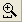
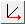
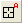
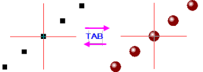

グラフィカルなデータ探索
Originは、データプロットのズームやパン、XY座標値やその他のデータポイントメタデータの読み取り、選択したデータポイントの強調表示やマスクなど、データをグラフィカルに検索するためのツールを多数提供しています。
 | Origin 2016からアドオンツールのアプリが利用可能になりました。OriginLabWebサイトのファイル交換の場には様々なデータ検索および分析のためのツールが追加されています。Originの標準機能ではない探索ツールや解析ツールが必要な場合は、アプリを確認してください。アプリにもない場合、リクエストをお待ちしています。
|
プロットのハイライト
プロットの強調表示でデータのサブセットを選択し、より詳細な分析を行うことができますが、基本的なレベルでは、視覚的な比較をすばやく行うのに役立ちます。
プロットを強調表示する方法
- グラフレイヤでプロットをクリックします。同じX軸を共有するレイヤおよびリンクされたレイヤの他のプロットは淡色表示になります。
- オブジェクトマネージャのプロット上でクリックします。
- クリックしなくてもマウスカーソルをのせるだけでプロットを強調表示/暗くするには、ミニツールバーのマウスオーバーでプロットを強調表示ボタン（ページレベル）をクリックします。
データプロットの迅速なチェックに役立つその他のOrigin機能：
- Yデータの列が多い場合、ブラウザグラフをプロットしたり、既存の2D折れ線グラフにブラウザパネルを追加したりすると、すばやくチェックするのに役立ちます。ブラウザパネルのメニューをクリックすると、N 番目ごとの列でプロット、またはプロットをめくることができます。
- 散布図データの場合は、カスタマイズ可能なデータポイントツールチップを使用して、マウスオーバー時に座標値と列メタデータを読み取ります。
- 次のセクションでの説明のように、プロット操作・オブジェクト作成ツールバーボタンを使用してグラフをズームとパンニングすることもできます。
- Originには、データプロットの情報を視覚的にチェックおよび記録するために使用できる他のさまざまなツールがあり、それらについては、この章の残りのサブセクションで説明します。
データスライサー
データフィルタが適用されているワークシートデータをプロットする場合は、データスライサーパネルを有効にし、フィルター条件をすばやく変更して、プロットへの影響を確認できます。このツールは、単一のカテゴリをプロットして比較することを目的としています。
- ワークシートデータに1つ以上のフィルタを適用し、グラフを作成します。
- グラフウィンドウのすぐ内側でレイヤの外側にカーソルを合わせ、ミニツールバーカーソルが表示されたら、クリックしてデータスライサーボタンを探します。
- データスライサーパネルを有効にしたら、ワークシートとグラフの両方のタイトルバーを右クリックして、2つのウィンドウを複製します。2つを複製すると、並べて比較することができます。
- 複製されたグラフの左側のパネルで、リストされているフィルタをクリックし、ドロップダウンリストから別のカテゴリを選択します
ズーム, パンニング, 再スケール
グラフの拡大拡大グラフ グラフ、ズームインズームイン、グラフ グラフ、パンニングパンニング、グラフ グラフ、再スケール再スケール、グラフ
ここでは、ツールバー、キーボード、メニューコマンドにより2Dグラフの表示を変更する方法を説明します。これらのツールとコマンドは次の2つのグループに分けられます。
- ページレベルのズームとパンニング操作は軸スケールを変更しません。
- 軸の開始と終了の値を変更することで、グラフのズームとパンニングをする軸の再スケール操作です。
| ページレベルのズームとパンはグラフを変更しません。グラフページのどの部分がグラフウィンドウ内に表示されるかを決定するだけです。標準ツールバーのズームドロップダウンリストで、現在のズームレベルを確認できます。ページレベルのズームとパンは、グラフの印刷やエクスポートに影響ありません。しかし、軸の再スケールツール（ や ）は軸のスケールを変更してグラフの印刷やエクスポートに影響します。 ）は軸のスケールを変更してグラフの印刷やエクスポートに影響します。
|
ページレベルのズームとパンニング
| アクション
|
ボタン
|
ショートカットキー
|
メニュー
|
ノート
|
| ズームパンニング: グラフページのズームとパン
|

|
A +
+/- キー(ズーム)
または
矢印キー (パン)
|
|
ツールバーボタンをクリックするかポインタツール をアクティブにして、グラフページ上にカーソルを置き、Aを押しながら... をアクティブにして、グラフページ上にカーソルを置き、Aを押しながら...
- +/- キーを押す、またはマウスホイール回転して、ズームインまたはズームアウト出来ます。
- 矢印キーを使って水平または垂直方向にパンニングできます。
|
| ステップ式ズームとパン†: ステップ増分でのグラフのズームインとズームアウト。
|


|
CTRL + I または CTRL + M
|
表示: ズームイン および 表示: ズームアウト
|
- ステップ式ズーム
- CTRL+Iでズームをアクティブにし、拡大するポイントを栗クリックして指定します。
- CTRL+Mでズームアウトをアクティブにし、不要なグラフ部分をクリックします。
|
| 全ページ表示: グラフの全体を表示
|
|
CTRL + W
|
表示:全ページ表示
|
- 上のズームとパンニングツールを使った後、ページの表示をリセットします。
|
| 全てズーム: ウィンドウの全てのオブジェクトが表示されます。
|
--
|
--
|
表示: 全てズーム
|
- グラフページ外にある見えないオブジェクトの表示に使います。
|
†ノート:これらは古いツールや方式で、既に廃止されています。ツールバーボタンはデフォルトでは表示されていません。ワークスペースにこれらを追加するには、カスタマイズツールバーダイアログボックスを使います。 (表示：ツールバー > グラフ ボタングループ)。
軸の再スケール
| アクション
|
ボタン
|
ショートカットキー
|
メニュー
|
ノート
|
| 再スケール: XとY方向にグラフを再スケールとパンニングします。
|
|
Z + マウスの右ボタンを押し、垂直方向 (Y方向にスケーリング) または水平方向 (X方向にスケーリング) にドラッグします。
|
--
|
- マウスホイールをスクロールしてXを再スケールします。
- SHIFT + スクロールでYを再スケールします。
- マウスの左ボタンでつかみ、ドラッグしてパンニングします。（XとYの再スケールを行います。）
- ポインタツールをクリックして再スケールモードを終了します。
|
| X方向にグラフを再スケール
|
--
|
Z + マウスのホイールをスクロール
または
Z + +/- キー
|
--
|
|
| X方向にグラフをパン
|
--
|
X + マウスのホイールをスクロール
または
X + +/- キー
|
--
|
|
| X軸の再スケール: X方向にグラフを再スケール
|

|
--
|
--
|
- 全X範囲に余裕を持たせて再スケール（リセット）します。
|
| Y方向にグラフを再スケール
|
--
|
SHIFT + Z + マウスのホイールをスクロール
または
SHIFT + Z + +/- キー
|
--
|
|
| Y方向にグラフをパン
|
--
|
SHIFT + X + マウスのホイールをスクロール
または
SHIFT + X + +/- キー
|
--
|
|
| Y軸の再スケール: Y方向にグラフを再スケール
|

|
--
|
--
|
- 全Y範囲に余裕を持たせて再スケール（リセット）します。
|
| XY軸の再スケール: XとY方向にグラフを再スケールします。
|
|
--
|
--
|
- 全XY範囲に余裕を持たせて再スケール（リセット）します。
|
| Z軸の再スケール: Z方向にグラフを再スケールします。
|

|
--
|
--
|
- 全Z範囲に余裕を持たせて再スケール（リセット）します。
|
| 軸スケールの拡大/復元: XとY方向にグラフを再スケールとパンニングします。
|
また、
|
--
|
--
|
- 軸スケール拡大ボタンをクリックし、ドラッグして矩形で軸スケール範囲を定義します。
- 軸スケール復元ボタンを数回クリックして、リセットします。（ドラッグの必要はありません。）
- XとYを再スケールします。
- ESCを押して（あるいは他のツールを選択して）拡大モードを終了します。
- グラフをアクティブにして、Ctrlキーを押して軸スケールの拡大ボタンをクリックし、2Dグラフ上の矩形をドラッグすると新しいウィンドウに拡大グラフとしてコピーされます。この拡大グラフはダイナミックなものです。元のグラフの矩形を移動、サイズ変更すると拡大グラフも更新されます。複数のレイヤが重なっており、かつ軸を共有している リンクされたレイヤのグラフの場合にも、この機能は有効です（作図の詳細-レイヤ属性：レイヤの大きさタブにてリンクされたレイヤの%が左/上は0に、幅/高さは100に、さらに親レイヤ座標軸へのリンクは直接(1対1)となっていること）。
|
| 再スケール: 全ての方向でグラフを再スケールします。
|
|
Ctrl + R
|
グラフ操作: 再スケールして全てを表示
|
- レイヤ内の全データを表示するためにすべての軸を再スケールします。
|
| 3Dグラフ
|
| X方向に再スケール
|
--
|
Z + マウスのホイールをスクロール
|
--
|
プロットが3Dの枠外にある場合は、作図の詳細 > その他の3Dオプションタブ (レイヤレベル)に移動し、クリッピングで設定します。
|
| Y方向に再スケール
|
--
|
SHIFT + Z + マウスのホイールをスクロール
|
--
|
| Z方向に再スケール
|
--
|
D + マウスのホイールをスクロール
|
--
|
| - ツールバーボタンが見当たらない場合、非表示に設定されているはずです。ツールバーのボタンの追加や削除については、ツールバーのカスタム化ダイアログボックスをご覧ください。
- 軸の拡大縮小ツールのいずれかを使用しているときに軸が拡大縮小されないようにするには、再スケール = 固定と設定します。X 軸とY軸のどちらも固定に設定されている場合に、これらの軸再スケーリングツールのいずれかを選択すると、X軸とY軸を「手動再スケールモード」に変更してから続行するように求められます。はいと答えると、片方または両方の寸法を上書きして手動で拡大縮小できます。このような手動による固定軸スケールの上書きをブロックする必要がある場合は、@nrm = 1を設定してください。
|
3D OpenGLグラフの回転
 | 以前は3Dレイヤが選択されたときに表示されていたこのopenGLツールバーは、レイヤレベルのミニツールバーボタンに置き換えられました。

|
3Dグラフのレイヤ内をクリックすると、レイヤが選択され、ミニツールバーが表示されます。回転モードボタンをクリックして、回転モードに入ります。 次に、以下にリストされているホットキー/マウスの組み合わせのいずれかを使用します。 または、グラフ内の半径方向の回転ハンドルをマウスでドラッグします。
| ホットキー
|
メニュー/アクション
|
コンテキスト
|
| 3Dフローティング型ボタンで3Dグラフを回転
|
| X + 矢印キー
|
X 軸で3Dグラフを回転させます。
|
グラフレイヤをアクティブにして、3Dフロートボタングループの回転ボタンを選択します。
|
| Y + 矢印キー
|
Y軸で3Dグラフを回転させます。
|
| Z + 矢印キー
|
Z軸で3Dグラフを回転させます。
|
| Q + 矢印キー
|
スクリーンで3Dグラフを回転させます。
|
| W + 矢印キー
|
全ての軸で3Dグラフを回転させます。
|
| Rキーを使って3Dグラフを回転
|
| R + マウス
|
任意の方向に3Dグラフをドラッグして回転させます。
|
他のキーを押す前に "R" を押します。
"R"を押している間は、3Dグラフの上のポインター が  に変わります。必要に応じてCtrlと/またはShiftを押してマウスドラッグで回転、または、キーボードの矢印キーを使って回転できます。 に変わります。必要に応じてCtrlと/またはShiftを押してマウスドラッグで回転、または、キーボードの矢印キーを使って回転できます。
|
| R + Ctrl + マウス/矢印キー
|
X 軸で3Dグラフを回転させます。
|
| R + Shift + マウス/矢印キー
|
Y軸で3Dグラフを回転させます。
|
| R + Ctrl+ Shift + マウス/矢印キー
|
Z軸で3Dグラフを回転させます。
|
座標値と距離を読み取る
Originには、データプロットを視覚的に探索したりラベル付けするいくつかのツールが提供されています。これらのツールはプロット操作･オブジェクト作成ツールバー（表示：ツールバー）から利用できます。同様のツール、垂直カーソルガジェットがガジェットメニューから利用可能です。
データポイントツールチップ
多くの2Dグラフ、3D散布図、XYY 棒およびXYZググラフで、データポイントにマウスを置いたときにデータポイント値を読み取る、編集可能なツールチップが表示されます。
ツールチップショートカットメニュー
ツールチップの編集やその他のオプションについては、データポイントのツールチップを直接右クリックしてください。
- シートに移動は、ワークシート上の該当するデータをハイライトして表示します。
- データポイントツールチップを表示は、編集可能なデータポイントのツールチップと、カスタマイズ不可能なデータプロットツールチップの表示を切り替えます（下記参照）。
- データポイント取得は、カーソルをデータ読み取りモードし、ポイント取得ダイアログを開きます。グラフのポイント上でダブルクリックして終了するときには完了をクリックします。これにより取得ポイントのサマリーデータ(ソース、XY座標など)が生成されます。
- コピーは、ラベルを含むデータポイントのツールチップ情報をクリップボードにコピーします。
- 座標コピーは、座標の値のみをコピーします。セルを右クリックして、各値を行内の個別のセルに貼り付けをします。または貼り付け（スペースを保持）をして、選択したセルにスペースで区切られた文字列として値を貼り付けます。
- 設定は、データポイントツールチップダイアログが開き、ツールチップの内容とフォーマットを変更できます。以下のデータ情報ウィンドウのドキュメントを、ツールチップを構成するためのガイドとして使用してください。
データポイントツールチップダイアログは、データ情報ウィンドウの設定ダイアログ（データ情報レポート設定）とほぼ同じです。データポイントツールチップの編集については、データ情報ウィンドウを参照してください。
| デフォルトでは、データポイントのヒントが中程度の透明度で表示されます。LabTalk System Variable @TDTの値を変更することによって、ツールチップの透明度に影響を与えることができます。LabTalkシステム変数の値を変更する方法については、このFAQを参照してください。
|
データプロットツールチップ
データポイントツールチップの代わりに表示できる2つ目のツールチップがあります。これをデータプロットツールチップと呼びます。このカスタマイズ不可能なツールチップは、ソースブック、ワークシート、および座標データセットを表示します。
デフォルトでデータポイントツールチップが表示されます。データプロットツールチップを使用する場合は、データポイントツールチップを右クリックして、データプロットツールチップを表示を選択します。逆に、データプロットツールチップを右クリックしてデータポイントツールチップを表示と操作もできます。
ツールチップ表示の管理
グラフウィンドウをアクティブにして表示メニューをクリックし、データツールチップの横のチェックマークをオフにすると、データツールチップの表示をオフにできます。
より複雑ですが、より高度な制御を可能にするツールチップ表示を制御する2つ目の方法があります。これにはLabTalkシステム変数値の変更（@PTと@PTI）を伴います。
@PT=0; //データプロットとデータポイントツールチップの両方を無効にする
@PT=1; //2次元グラフ用のデータポイントツールチップを有効にする
@PT=2; //3D OpenGLグラフのデータプロットツールチップを有効にする（初期設定）
@PT=3; //2Dグラフと3D OpenGLグラフの両方のデータプロットツールチップを有効にする
@PTI=0; //データポイントツールチップのみを無効にする
@PTI=1; //データポイントのツールチップを有効にする（デフォルト)
アノテーションツール
データラベル（アノテーション）ツールのボタンから距離計測ツールと角度計測ツールのボタンを利用できます。
アノテーションツールはデータポイントにラベルを付けるときに使用します。このツールは、「散布図」「線＋シンボル」「縦棒／横棒」グラフで有効です。数種類の標準データポイントのラベルから選択するか、LabTalkスクリプトを使用したカスタムラベルを作成します。
データポイントに注釈をつける方法
- プロット操作・オブジェクト作成ツールバー上のデータラベルツールボタンをクリックし、カーソルをデータポイントに移動します。カーソルとステータスバーに現在のラベル形式が表示されます。
- TABキーを押し、表示オプションを（X座標値, Y座消値）、（X座標値, Y座標値）[インデックス番号]、X座標値、Y座標値、インデックス番号(行番号)、カスタム（次のチュートリアル参照）に切り替えられます。
- ラベル形式を選択したら、ダブルクリックしてデータポイントにラベルを付けます。またはポイントをシングルクリックしてEnterを押します。

|
チュートリアル：ラベル表示内容を変更する
ラベル内容は、X、Y座標値と文字を組み合わせてカスタマイズできます。
- グラフウィンドウをアクティブにします。
- スクリプトウィンドウ (ウィンドウ：スクリプトウィンドウ)を開き、以下のように入力してEnterキーを押します。
system.annotation.customlabel$="X value: $(x,.2), Y value: $(y,*5)
- データラベルボタンをクリックして、カーソルをグラフ上に移動し、TABキーを数回押します。ステータスバーに表示されるラベル形式が、カスタムラベルになったら使用します。カーソルに「カスタム」と表示されます。
- データポイント上でダブルクリック（またはシングルクリックしてEnterキーを押す）してカスタムラベルを追加します。この場合、スクリプトで指定したように有効桁2桁のX値と、有効桁5桁のY値が表示されます。
|
ポインタツールを使用して調整：
- ほかのデータポイントにラベルを移動するには、ポインタツールをクリックして、ALTキーを押しながらラベルをドラッグします。
- 重なっているラベルを再配置するには、ラベルをドラッグします。引き出し線が自動で追加されます。
- ほかのデータポイントにラベルをコピー するには、CTRL + SHIFTを押しながら新しいデータポイントにドラッグします。
| Note: 文字列フォーマットの詳細については、次のプログラミングヘルプを確認してください。
ヘルプ: プログラミング: LabTalk > 言語リファレンス > オブジェクトリファレンス > アルファベット順オブジェクト> 文字列
|
スクリーンリーダツール
スクリーンリーダ は、グラフページ上のカーソルのXY(Z)座標をレポートするために座標データ表示ウィンドウを使用します。データリーダはデータポイントの座標を読み取るのではなく、グラフ軸に対応したページ座標を読み取っています。
は、グラフページ上のカーソルのXY(Z)座標をレポートするために座標データ表示ウィンドウを使用します。データリーダはデータポイントの座標を読み取るのではなく、グラフ軸に対応したページ座標を読み取っています。
座標データ表示ウィンドウはスクリーンリーダツールを選択すると自動で開きます(デフォルトでは、座標データ表示ウィンドウはOriginのワークスペースにドッキングしています)。
座標データ表示ウィンドウの各種設定はタイトルバーまたはウィンドウ内部で右クリックして利用可能です。
スクリーンリーダを使用するには：
- プロット操作･オブジェクト作成ツールバー上のスクリーンリーダをクリックします。座標データ表示ウィンドウが開きます。
- XY座標(3点グラフと等高線では、Zも含む)を読み取りたいスクリーンの位置をクリックします。座標データ表示ウィンドウに座標値が表示されます。
- スペースキーを押すとクロスヘアのサイズを大きくできます。
- プロット操作・オブジェクト作成ツールバーのポインタツールをクリックして、読み取りモードを終了します。
データリーダツール
データリーダ は、グラフ内のデータポイントに関連する情報を読み取るツールです。座標値だけでなく、データポイントに関する画像などのメタデータを含む複雑な情報を表示することもできます。データリーダは、編集可能なデータ情報ウィンドウと連携して利用します。
は、グラフ内のデータポイントに関連する情報を読み取るツールです。座標値だけでなく、データポイントに関する画像などのメタデータを含む複雑な情報を表示することもできます。データリーダは、編集可能なデータ情報ウィンドウと連携して利用します。
データリーダツールは、データカーソル及びとデータハイライターツールは、データカーソル及び とデータハイライター
とデータハイライター  のツール両方にグループ化されています。常に表示されるツールバーボタンは1つだけです。非表示のツールを選択するには、ボタンの右下の隅にある小さい矢印をクリックして、ショートカットメニューからツールを選択します。
のツール両方にグループ化されています。常に表示されるツールバーボタンは1つだけです。非表示のツールを選択するには、ボタンの右下の隅にある小さい矢印をクリックして、ショートカットメニューからツールを選択します。
| データリーダを使いながらグラフを拡大できます。ツールがアクティブなときに、Ctrlキーを押しながらマウスホイールを使用して、ページを拡大または縮小します。
|
- プロット操作･オブジェクト作成ツールバー上のデータリーダをクリックします。データ情報ウィンドウが開きます。
- XY座標(あればZも)を読み取りたいデータポイントをクリックします。データ情報ウィンドウ（データ表示ディスプレイも）に座標値が表示されます。
- 同一データプロット上の隣接するデータポイントに、クロスヘアカーソルを移動するには、左右の矢印キーを押すか、そのデータポイントをクリックします。 レイヤに複数プロットがある場合、上下矢印キーを使って別のプロットにデータポイントに移すか、マウスでポイント上をクリックします。
- 現在選択しているクロスヘアカーソルの水平・垂直線を長くするには、スペースキーを押します。
- プロット操作・オブジェクト作成ツールバーのポインタツールをクリックするかEscキーを押して、読み取りモードを終了します。
| データ リーダの矢印キーの加速とデータの増分を制御するシステム変数があります。詳細な情報はグラフの座標値を読み取るにある概要の表をご覧ください。
|
データカーソルツール
データカーソルツール（データリーダツールとグループ化されている）は、データプロットに1つ以上のカーソルを配置でき、（データ情報ウィンドウを使って）カーソルの座標を読み取ったり、2つのカーソル間の距離や、カーソルとデータリーダで選択したポイント間の距離を計測できます。
|
|
チュートリアル：データカーソルツールで相対距離を計算
- Samples\Spectroscopy\Sample Pulses.datファイルをインポートして折れ線グラフを作成します。
- プロット操作・オブジェクト作成ツールバー上のデータカーソルボタンをクリックします。

- ピークの上でダブルクリックするか、データポイントでクリックして、ENTERを押してカーソルオブジェクトを追加します。
- もうひとつのピークにもカーソルを配置します。
- データ情報ウィンドウでダブルクリックして、データ情報レポート設定ダイアログを開きます。このウィンドウがない場合、表示：データ情報ディスプレイと選択すると表示できます。
- 列タブを開いて、表示されている列の右側にある灰色の領域で右クリックし、列の追加を選択します。
- 新しい列が追加されるので、その新しい列にある行でクリックし、ドロップダウンから相関（カーソル2 - カーソル1）を選択します。OKボタンをクリックしてダイアログを閉じます。
- カーソルをドラッグして移動すると、データ情報ディスプレイに2つのカーソル間の相対距離がX、Yともに表示されます。
|
距離計測ツール
距離計測ツールボタン は、プロット操作・オブジェクト作成ツールバーのデータラベルツールと角度測定ツールともにある「分割ボタン」にあります
は、プロット操作・オブジェクト作成ツールバーのデータラベルツールと角度測定ツールともにある「分割ボタン」にあります
距離計測ツールを使うと、2Dグラフの2点間にラベル付きの両方向矢印を描画できます。

- プロット操作・オブジェクト作成ツールバーの距離計測ツールボタンをクリックします。
- マウスを使ってグラフ上の開始点から終了点へクリック&ドラッグして両方向の矢印オブジェクトを描画します。Shiftキーを押して、両方向の矢印を水平または垂直方向に引くことができます。
- 矢印の配置を調整するには、描画した矢印を右クリックして、プロパティを選択します。サイズタブで、オブジェクトの正確な位置を設定できます。
角度計測ツール
角度計測ツールボタン は、プロット操作・オブジェクト作成ツールバーのデータラベルツールと距離測定ツールともにある「分割ボタン」にあります。
は、プロット操作・オブジェクト作成ツールバーのデータラベルツールと距離測定ツールともにある「分割ボタン」にあります。
角度測定ツールを使用して、<180°の内角を描画してラベル付けします。

データハイライトツール
データハイライターは、ツールバーのデータリーダーとデータカーソルツールとグループ化されています。データハイライターを使用して、グラフ内の1つまたは複数のポイントを選択し、同時にワークシート内の対応するデータ行を強調表示します。選択されていない点は、グラフとワークシートでグレーアウト表示されます。
データハイライターモードの間は...
- CTRLキーを押しながら、グラフ内の複数のポイントを選択します。
- 複数の点を選択するには、グラフ上の四角形/自由曲線をドラッグします。
- SPACEを使用して、四角形とフリーハンドの選択モードを切り替えます。
- 左/右矢印キーを使用して、行番号の順に個々のポイントを強調表示します。
- ワークシート（ハイライトモードのまま）では、Ctrlキーを押しながら複数の行をクリックするか、SHIFT +行のブロックを選択して、グラフ内の対応する点を強調表示します。
- ESCキーを押すとワークシートで強調表示された行を選択状態にしてから、ハイライト・モードを終了します。
| 上述のように、グラフウィンドウでESCを押してデータを選択状態にできますが、それをせずにワークシートでハイライトされたデータを作図しようとすると、作図のセットアップ定ダイアログが開き、最初から設定が必要になります。この場合、システム変数 @QDHT=1 を設定することで、ESCキーを押さずに選択状態にできます。これにより、ワークシートに直接移動して、ハイライトデータから直接プロットできます。
システム変数を設定する方法のほかに、データハイライターでデータポイントを選択したとにミニツールバーのサブセットシートの作成ボタンをクリックすることで新規シートにデータを出力可能になっています。
|
複数シートからデータを取得
データハイライターがアクティブな時に、グラフまたはワークブックウィンドウの右上でミニツールバーが表示されます。このツールバーには、サブセットシートの作成、ポイントを削除、選択したポイントのマスク/マスク解除、選択不可ポイントのマスク/マスクマスク解除、プロパティダイアログを開くの5つのボタンがあり、これらを使用して複数ワークシートからデータを取得できます。
複数シートからプロットされたポイントを取得するには
複数ワークシートからプロットされたグラフのポイントサブセットを単一シートに取得することができます。
- データハイライターツールをクリックして、 CTRL+クリックで1つのプロットから複数ポイントを選択します。または、グラフ上で四角形/自由曲線ツールでドラッグして複数ポイントを選択します（ヒント：スペースキーでROI形状を切り替え）。
- 完了したら、ハイライターミニツールバーのサブセットシートの作成ボタンをクリックします。
- ミニツールバーのプロパティダイアログを開くボタンをクリックし、データ追加方法を間隔を空けて追加に変更します。
- 続けて、操作1と同じように、ほかのプロット（ワークシート）からポイントを取得し、サブセットシートの作成ボタンをクリックします。必要に応じてこれを繰り返します。
- 完了したら、ポインタツールをクリックします。
データ情報ウィンドウ
グラフ探索ツール、データ情報ウィンドウ
グラフ探索ツール、データリーダー
グラフ探索ツール、アノテーション
グラフ探索ツール、データカーソル
データ情報ウィンドウ
データ情報ウィンドウは、データリーダー 、アノテーション またはデータカーソル ツールの何れかを選択すると開きます。これらのツールでプロットデータポイントをクリックすると、データ情報ウィンドウに特定ポイントの情報が表示されます。
初期設定では、データ情報ウィンドウには、列のショートネーム、プロットの指定（「X」など）、およびデータポイントのXY座標値が表示されます。しかし、ウィンドウはメタデータおよび画像を含むデータポイントに関連付けられたワークシートに含まれる情報のいずれかを表示することが出来ます。
データ情報ウィンドウを編集するには：
- データ情報ウィンドウ上でダブルクリックするか右クリックして、プロパティを選択します。
- すると、データ情報レポート設定ダイアログが開きます。これは、データ情報ウィンドウに表示する項目を編集するためのものです。
- データ情報ウィンドウは、元データワークシート内の情報をレポートします。プロットされたデータの表示に限定されません。
- ウィンドウには、挿入されたグラフや画像など、ワークシートのセルに挿入できるものを表示できます。
- ウィンドウタイトルとレポートタイトルでウィンドウをカスタマイズできます。
- ウィンドウ設定は、保存先 <Graph>、保存先 <Layer>、保存先 <DataPlot>などのテーマとして保存できます。これにより、たとえば、プロジェクト内のすべてのグラフウィンドウや、複数区分グラフのすべてのグラフレイヤに、同様のデータ情報ウィンドウを持たせることができます。保存されたテーマは、現在のデータ情報ウィンドウにロードして適用することができます。

| データ情報テーマの設定をグラフに保存し、グラフウィンドウをスタンドアロンのグラフウィンドウファイル（OGG、OGGU）として保存すると、OGG / OGGUファイルはグラフにプロットされたデータだけで移動することがわかります。したがって、データ情報テーマがワークシート内の他の列のデータを使用する場合、たとえば、新しいプロジェクトでウィンドウファイルを再度開くと、データ情報表示が不完全になります。
-
|
データ情報ウィンドウのカスタマイズについての詳細は、以下を参照してください。
ガジェット
Gadgets
Coordinates, Reading/Labeling
Statistics
Region of Interest (ROI)
Originはデータの検索と分析に使用できるガジェット機能を提供しています。ガジェットは、グラフウィンドウがアクティブなときに、ガジェットメニューから使用できます。データ検索には以下の3つのガジェットが利用可能です。
特に、垂直カーソルガジェットは、Xデータが共通の積み上げグラフや複数データグラフ内のポイントの座標値を読みとる時に便利です。
垂直カーソルを開くには
- グラフウィンドウをアクティブにし、メインメニューから、ガジェット：垂直カーソルを選択します。これにより垂直カーソルダイアログを開きます。
このガジェットを使用して、データラベルの追加、ラベルフォントサイズ変更、ラベル非表示などが可能です。
| 垂直カーソルでプロットにラベルを付けるときは、ガジェットのひとつの軸の全ての情報を表示ボタンをクリックして、別々のデータラベルを1つのラベルに結合することを選択できます。
|
統計ガジェットはグラフ内に矩形のROI（Region of Interest、関心領域）ボックスを配置し、その内部の基本統計量を計算します。関心領域（ROI）
- ROIボックス内の基本統計量を表示
- ROI内の平均と、指定した倍数（n）の標準偏差ラインを表示
- ROIを移動/サイズ変更時の自動更新

クラスターガジェット（OriginProのみ利用可）では、以下のような機能を使用できます。
- ROIボックス内の基本統計量を表示
- ROIボックスは矩形と楕円形から選択
- ROIボックスの内部または外部のポイントの統計値を表示
- データポイントの編集、コピー、マスク、削除、グループ化
- ROIを移動/サイズ変更時の自動更新
- ワークシートに結果を出力
| クラスターガジェットを使ってカテゴリー(プロットのうちROI内のポイント群)を定義することができ、ROI内のポイントに異なる色を適用できます。

|
| Note: ガジェット機能についての詳細は次のヘルプファイルを確認してください。
ヘルプ: Origin: Originヘルプ >ガジェット
|
グラフ内にデータポイントを描画
ここではデータプロットのグラフィカルな作成と修正方法について説明します。
このツールとメニューは、ある仮定の通りだった場合にデータがどのようになるかを探求したり、フィット関数のテスト用データを作成する際に役立ちます。これらは、2D散布図でのみ動作します。
データポイントを描画
- グラフウィンドウをアクティブにします。
- マウスで作図ツール をクリックします。
- 小さいダイアログが開き、グラフウィンドウのショートネームが表示されます。設定ボタンをクリックするとオプションを利用できます。
- データ追加モードを 1行開けて追加にします。開始ボタンをクリックしてグラフ上でダブルクリックするとデータポイントをセットできます。クリックを続けて必要なデータポイントを取得します。
- 新しいグラフウィンドウ上で描画されたポイントは、新しいシートGADataに追加されます。ワークシートボタンをクリックすると、この新しいワークブックを開けます。
- 完了ボタンをクリックしてポイント取得を終了します。
- 完了をクリックした分だけワークシートに「--」の区切り文字が追加され、XY座標のグループ（描画ポイント）が表示されます。
- 新しいグラフウィンドウ上で描画されたポイントは、新しいシートGADataに追加されます。グラフウィンドウごとに、ワークブック上に固有のしーよを持ちます。
- データポイントにラベルを付ける場合、新規ワークシートのLabel列にラベル情報を入力します。Label列情報は、作図の詳細ダイアログのシンボルタブで編集可能です。例えば、シンボルの色をラベル列のデータを参照してポイント毎に変化させる設定も可能です。
グラフ内にデータプロットを移動、削除する
Data Points, Deleting
Data Points, Drawing
データポイントの移動
グラフのデータポイントを移動できます。この場合、グラフと元のデータが変更されます。
- データ: データポイントの移動を選択します(データが変更されるという警告が表示されます)。
- 移動したいポイント上でクリックします。（XY座標を変更）ポイントに十字線を置き、ドラッグします。または、矢印キーを使います。
- ツールバーのポインタボタンを クリックして、ESCを押してデータポイントの移動モードを終了します。
グラフでデータポイントを移動すると、XとY座標がワークシートのセル内で変更されます。
| デフォルトではデータポイントの移動機能を開始すると、散布図がテンプレートのデフォルトスタイルに戻ります。これは、TABキーを押すことで編集されたシンボルに切り替えできます。
- 
|
データポイントの削除
以下の方法で、グラフから個々のデータを削除することができます。
- データ：不良データポイントの削除を選択します。
- データポイントをダブルクリックするか、目的のデータポイントをクリックしてEnterキーを押します。
- プロット作成・オブジェクト操作ツールバーの矢印ボタンをクリックするか、ESCキーを押して不良データポイントの削除モードを終了します。
データプロット、ワークシートセルの両方でデータポイントが削除されます。ワークシートでは、Y値のデータセル内の値が削除され、欠損値になります。
参考